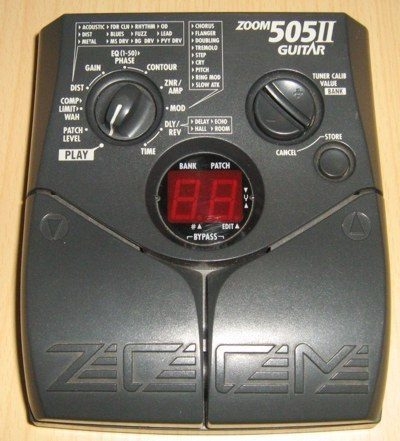
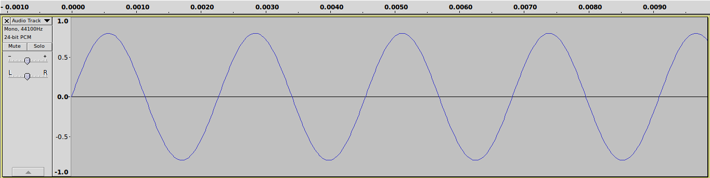
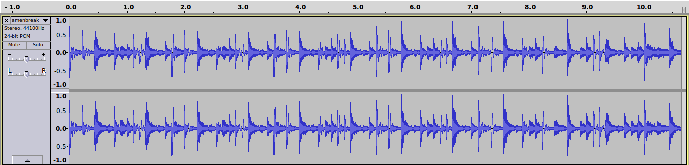
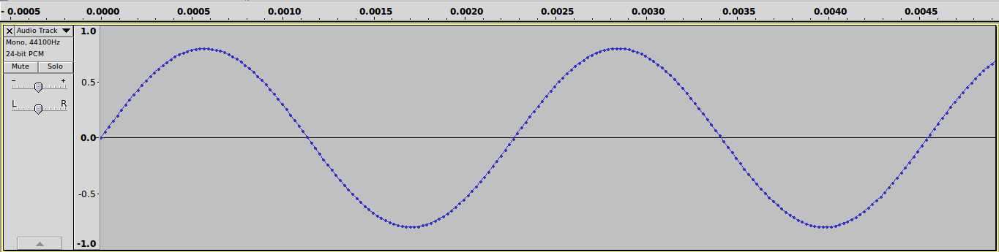
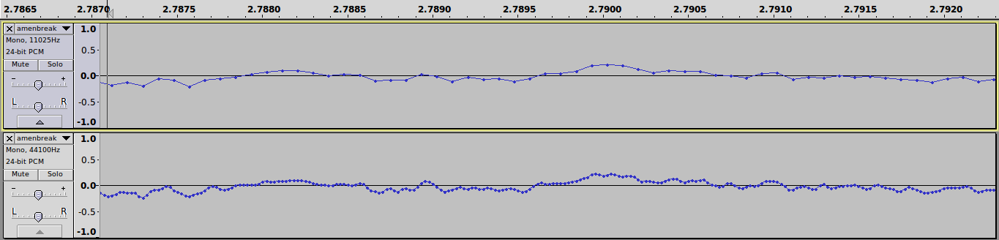
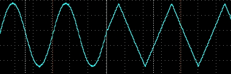
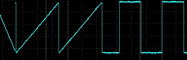

Processamento de Áudio com Arduino Due
Lucas Fialho Zawacki
O que queremos fazer aqui?
- Usar um Arduino Due como processador de sinais digitais
- Aprender como funciona áudio e áudio digital
- Fazer os nossos próprios efeitos de áudio baseados no som de uma guitarra
O que queremos fazer aqui? (cont.)
Zoomzera
Processamento de Sinais Digitais (DSP)
- Fonte sonora
- Onda elétrica
- Conversão Analógico-Digital (ADC)
- Código (manipulação digital dos dados)
- Conversão Digital-Analógica (DAC)
- Saída de Som (caixas de som, fones-de-ouvido)
Como funcionam ondas sonoras
- Váriação de pressão do ar
- Frequência da variação -> "Nota"
- Amplitude -> "Volume"
- Podemos converter ondas sonoras (mecânicas) em ondas eletricas
Ondas Sonoras
Seno
Onda bateria
Áudio Digital
- Representação numérica de uma frequência elétrica
- É feita como uma amostragem de partes da onda original...
- Virando uma sequência de números no tempo
Amostragem
Taxa de Amostragem
Qual a influência da taxa de amostragem?

Diferentes Ondas
- Seno, Triângulo, Quadrada, Dente de Serra, Pulso, ...
- ... o resto!


Arduino Due
- Arduino Baseado no Atmel SAM3X8E ARM Cortex-M3 CPU
- 32 bits, mais memória, mais processador
- Muito mais inputs e outputs
- DACs e ADCs
Voltagem e PCM
- Amplificação e amostragem do sinal de guitarra
- Valores variando entre 900 e 1400
- Um pouco de ruído
- Porém temos o nosso som!
{kind=link}